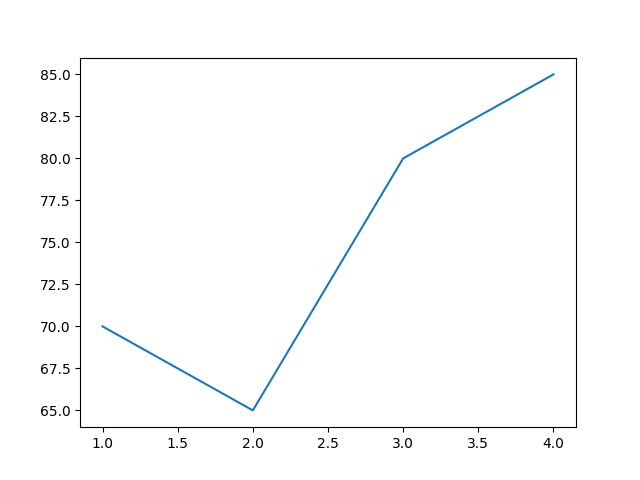

The first project I worked on is a simple guess the number game between 1 and 10.
we start off with a variable to hold the guess. Then we do a while loop and if-then statements within the while loop. We must do this as it has to loop through all possible conditions
The goal is if the person guesses wrong it should continue to ask the user to keep guessing until the answer is achieved.
Below is the input once the python program has been run. When the user enters a number that is too low, it outputs to the user it is too low, same with if the number is too high. And finally once the correct answer is chosen, the program ends with "well done"
Anytime you get data you must see what data types the data is stored as as well as any missing values, as missing values can result in an incorrect analysis
1. (lines 1-3) First step is importing numpy, matplotlib and pandas
2. (line 5) We need to read our data, it is stored as a csv file.
3. (line 6) Now that we have the csv file read, its useful to see what data types we are working with
4. (line 7) And finally we can see if there are any null values
Below is the output for the above code. It tells us a few facts
1. There is a total of 8 columns
2. 5 columns are object data types, 3 are int64
In this situation there are no null values, if there were our first info about our data would tell us what column has null values
The isnull tells us strictly how many values are null
The first step we need to do is import numpy as well as matplotlib. Then we need to create two variables to plot on our graph. Year and grade_avg will represent our x and y variables.
Our next figure shows us the output from the above code. In the next section we will continue to add labels as well as dots and font/color changes.
Now we have to add some more code to show labels that have fonts and color added
The figure below is the output from the above code
first we import tkinter then name the program as well as give it a title
the function get_results() is what i did last. first we must create the layout of the program
L1 - L6 are labels for the GUI, and E1-E6 are the entries where the user can input the data
This is what the gui looks like
Finally we go back to our function get_results() in order to actually save data to a txt file